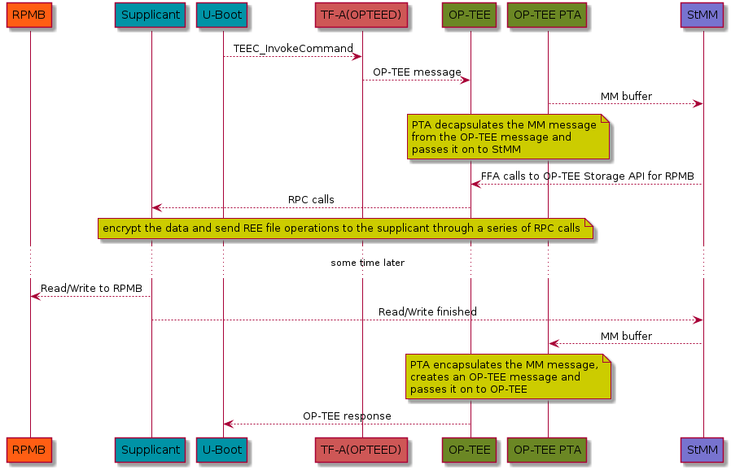

Protected UEFI variables with U-Boot
Posted on Sat 19 December 2020 in UEFI • 5 min read
Intro
Critical system variables, like the UEFI ones, must be protected against a variety of attacks. On Arm servers and desktops, which typically run EDK2, dedicated flashes are used. Those would normally be accessible from the secure world only, since they are storing critical variables for our systems integrity and security.
What about smaller embedded systems though? Those don't typically run EDK2 nor do they have special dedicated flashes. Those systems usually use U-Boot. Prior to 2019 U-Boot was using it's environment to store EFI variables. Although that was fine for the initial UEFI implementation, it imposed limitations to platforms that wanted to store variables securely and in the long run, implement UEFI Secure Boot.
Embedded devices with a dedicated flash in Secure World are rare though (anyone aware of any?). What's becoming more common though is eMMC flashes with an RPMB partition. Wouldn't it be nice to store the EFI variables in that? We would then inherit the RPMB Authentication and protection against Replay Attacks and use a non-volatile storage we trust more due to it's built-in security characteristics.
More problems
In the Arm ecosystem and it's Trusted Firmware you have, up to now (and prior to Arm8.4), two ways of dispatching payloads to the Secure world. The first one is called Secure Partition Manager or in short SPM. This is what EDK2 uses, when compiled for Arm, to spawn StandAloneMM, the component used for the variable management and storage.
The second one is called SPD or Secure Payload Dispatcher. This is what OP-TEE is using today. The problem is that those two are mutually exclusive. So you can either store EFI variables securely or run OP-TEE. Small devices, with limited hardware have a lot to gain when using a secure OS though. The first thing that comes in mind is running a FirmwareTPM or a secure client that takes care of the on-boarding process for small IoT devices.
Less code to the rescue
We could of course rewrite StandAloneMM as a Trusted Application for OP-TEE. The application is huge though, the final binary for EDK2 is ~2.5MB and quite complex. Wouldn't we be better off with an application that's been working for a couple of years? But can we run it directly in OP-TEE? That way we can get the best of both worlds. Re-use an existing application which will manage our variables securely and maintain the ability to run a Secure OS.
It turns out that the StandAloneMM binary is self-relocatable, so as long as we manage to jump on the first instruction, everything will just 'work'. We would of course need code in OP-TEE to launch the new partition and in U-Boot to communicate with that partition, but that should be way less, or at least that's what we assumed.
And less it was!
OP-TEE
and
U-Boot
already got patches for that and EDK2 patches are currently on upstream review
upstreamed.
Combining it all together
So far I've talked about variable management and internal details of Arm's Secure World. We've also managed to run StandAloneMM as part of OP-TEE, but who's responsible for reading and storing the variables eventually?
StandAloneMM includes the driver that implements the accesses to our hardware. EDK2 calls this Firmware Volume Block Protocol and it's designed to provide control over block-oriented firmware devices. So the missing link is a StandAloneMM FVB that can re-use OP-TEE and it's ability to access our RPMB partition securely, something like this.
If you combine all of the above, the final architecture looks like this!

An obvious downside is that you need to compile 4 different projects to get your final firmware.
On the other hand if we choose to make it a TA (Trusted Application) we use only 3, but you'd
have to compile that extra TA and link it to OP-TEE as an EarlyTA anyway.
Building
Building TFA
mkdir firmware && cd firmware/
git clone https://github.com/ARM-software/arm-trusted-firmware
pushd arm-trusted-firmware/
make CROSS_COMPILE=aarch64-linux-gnu- ARCH=aarch64 PLAT=<board> TARGET_BOARD=<board> SPD=opteed
popd
Building EDK2
At the time of this article the EDK2 patchset is under review
git clone https://github.com/tianocore/edk2.git
git clone https://github.com/tianocore/edk2-platforms.git
export WORKSPACE=$(pwd)
export PACKAGES_PATH=$WORKSPACE/edk2:$WORKSPACE/edk2-platforms
export ACTIVE_PLATFORM="Platform/StandaloneMm/PlatformStandaloneMmPkg/PlatformStandaloneMmRpmb.dsc"
export GCC5_AARCH64_PREFIX=aarch64-linux-gnu-
pushd edk2/
git submodule init && git submodule update --init --recursive
popd
source edk2/edksetup.sh
make -C edk2/BaseTools
build -p $ACTIVE_PLATFORM -b RELEASE -a AARCH64 -t GCC5 -n $(nproc)
The StandAloneMM binary is located at Build/MmStandaloneRpmb/RELEASE_GCC5/FV/BL32_AP_MM.fd
Building OP-TEE
git clone https://github.com/OP-TEE/optee_os.git
cp Build/MmStandaloneRpmb/RELEASE_GCC5/FV/BL32_AP_MM.fd optee_os/
pushd optee_os/
export ARCH=arm
CROSS_COMPILE32=arm-linux-gnueabihf- make -j32 CFG_ARM64_core=y PLATFORM=<plat> \
CFG_STMM_PATH=BL32_AP_MM.fd CFG_RPMB_FS=y CFG_RPMB_FS_DEV_ID=<dev id 0,1 etc> \
CFG_CORE_HEAP_SIZE=524288 CFG_CORE_DYN_SHM=y CFG_RPMB_WRITE_KEY=1 \
CFG_REE_FS=n CFG_CORE_ARM64_PA_BITS=48 CFG_SCTLR_ALIGNMENT_CHECK=n \
popd
CAUTION: OP-TEE will program the RPMB key
(which is one time programmable). If your platform port of OP-TEE doesn't have a way of retrieving
a secure key from the hardware you might end up with the default CFG_RPMB_TESTKEY.
Building U-Boot
You'll need to enable U-Boot's extra configuration options to enable this. So clone U-Boot, apply your board defconfig and enable these options:
git clone https://github.com/u-boot/u-boot.git
pushd u-boot/
export CROSS_COMPILE=aarch64-linux-gnu-
export ARCH=arm64
pushd u-boot
make menuconfig ---> Enable the required options
CONFIG_OPTEE=y
CONFIG_CMD_OPTEE_RPMB=y
CONFIG_EFI_MM_COMM_TEE=y
make -j $(nproc)
popd
NOTE: U-Boot currently only supports dynamic shared memory to communicate with OP-TEE. Your board's OP-TEE port should register that memory in ./core/arch/arm/plat-platform/main.c or define it in your platform DTS file.
register_ddr(DRAM0_BASE, DRAM0_SIZE); ---> replace with your board specific ranges
You'll otherwise get an error trying to probe OP-TEE.
Assembling the final image and testing
Each board has, unfortunately, it's own way of creating the final firmware image. The build steps for EDK2 and ArmTrustedFirmware should be standard. For assembling the final image containing TF-A, OP-TEE and U-Boot refer to the vendor manual.
On your first boot, if the RPMB key is not programmed, OP-TEE will do that for you.
D/TC:?? 00 tee_rpmb_write_and_verify_key:1069 RPMB INIT: Writing Key value:
D/TC:?? 00 tee_rpmb_write_and_verify_key:1070 00000000fc142dc0 xx xx xx xx xx xx xx xx xx xx xx xx xx xx xx xx
D/TC:?? 00 tee_rpmb_write_and_verify_key:1070 00000000fc142dd0 xx xx xx xx xx xx xx xx xx xx xx xx xx xx xx xx
Print variables
Notice OP-TEE probing before accessing the variables OP-TEE: revision 3.11 (e6e7781f)
=> printenv -e
Found 2 disks
OP-TEE: revision 3.11 (e6e7781f)
SetupMode:
8be4df61-93ca-11d2-aa0d-00e098032b8c EFI_GLOBAL_VARIABLE_GUID
BS|RT|RO, DataSize = 0x1
SignatureSupport:
8be4df61-93ca-11d2-aa0d-00e098032b8c EFI_GLOBAL_VARIABLE_GUID
BS|RT|RO, DataSize = 0x40
SecureBoot:
8be4df61-93ca-11d2-aa0d-00e098032b8c EFI_GLOBAL_VARIABLE_GUID
BS|RT|RO, DataSize = 0x1
certdbv:
d9bee56e-75dc-49d9-b4d7-b534210f637a
2103-11-19 18:43:00
BS|RT|AT|RO, DataSize = 0x4
AuditMode:
8be4df61-93ca-11d2-aa0d-00e098032b8c EFI_GLOBAL_VARIABLE_GUID
BS|RT|RO, DataSize = 0x1
DeployedMode:
8be4df61-93ca-11d2-aa0d-00e098032b8c EFI_GLOBAL_VARIABLE_GUID
BS|RT|RO, DataSize = 0x1
VendorKeys:
8be4df61-93ca-11d2-aa0d-00e098032b8c EFI_GLOBAL_VARIABLE_GUID
BS|RT|RO, DataSize = 0x1
PlatformLangCodes:
8be4df61-93ca-11d2-aa0d-00e098032b8c EFI_GLOBAL_VARIABLE_GUID
BS|RT|RO, DataSize = 0x6
OsIndicationsSupported:
8be4df61-93ca-11d2-aa0d-00e098032b8c EFI_GLOBAL_VARIABLE_GUID
BS|RT|RO, DataSize = 0x8
CustomMode:
c076ec0c-7028-4399-a072-71ee5c448b9f
NV|BS, DataSize = 0x1
certdb:
d9bee56e-75dc-49d9-b4d7-b534210f637a
2103-11-19 18:43:00
NV|BS|RT|AT|RO, DataSize = 0x4
VendorKeysNv:
9073e4e0-60ec-4b6e-9903-4c223c260f3c
2103-11-19 18:43:00
NV|BS|AT|RO, DataSize = 0x1
PlatformLang:
8be4df61-93ca-11d2-aa0d-00e098032b8c EFI_GLOBAL_VARIABLE_GUID
NV|BS|RT, DataSize = 0x6
Boot0000:
8be4df61-93ca-11d2-aa0d-00e098032b8c EFI_GLOBAL_VARIABLE_GUID
NV|BS|RT, DataSize = 0x78
BootOrder:
8be4df61-93ca-11d2-aa0d-00e098032b8c EFI_GLOBAL_VARIABLE_GUID
NV|BS|RT, DataSize = 0x2
=>
Set/Get a variable
=> setenv -e -nv -bs -rt test2 test2
=> printenv -e test2
test2:
8be4df61-93ca-11d2-aa0d-00e098032b8c EFI_GLOBAL_VARIABLE_GUID
NV|BS|RT, DataSize = 0x5
=>
Check available storage
=> efidebug query -bs -rt -nv
Max storage size 16284
Remaining storage size 15188
Max variable size 8132
=>
Next Steps
Since U-Boot's EFI support is getting richer I'll try installing Debian on Armv8 designed to work as a workstation